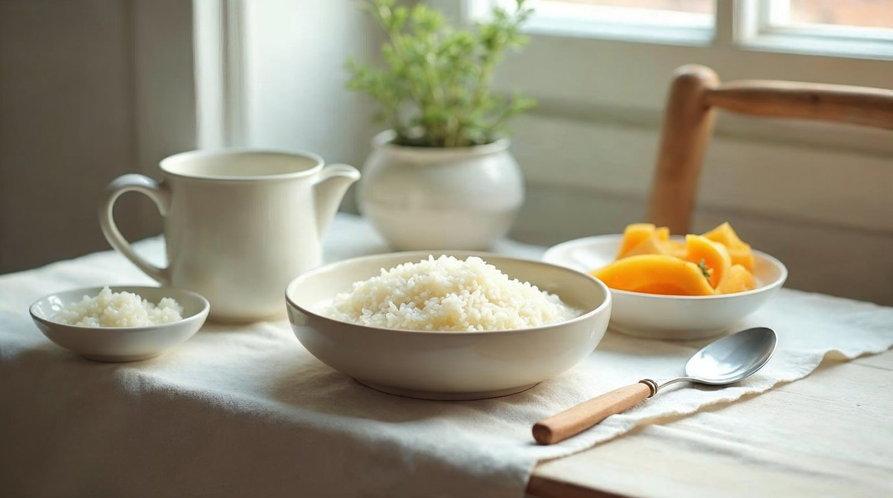
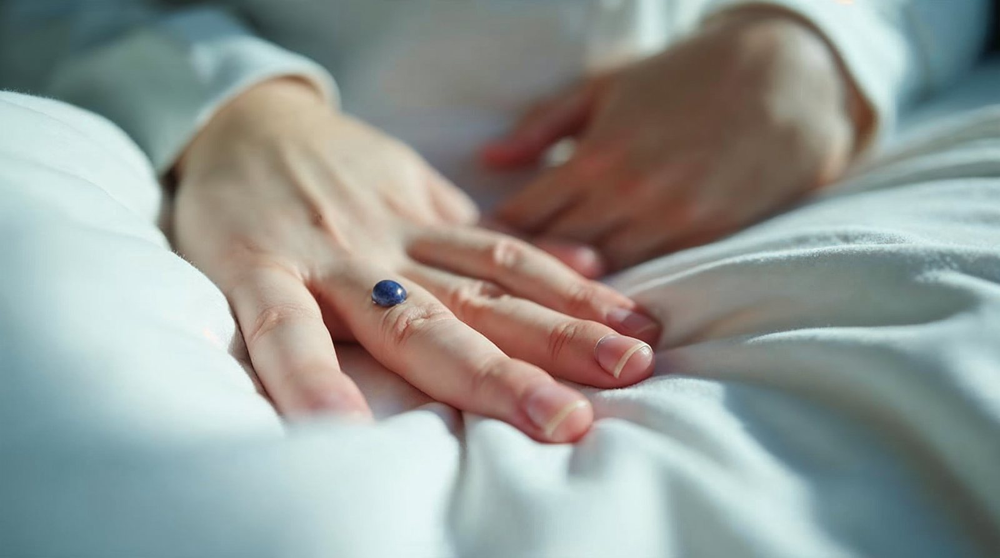
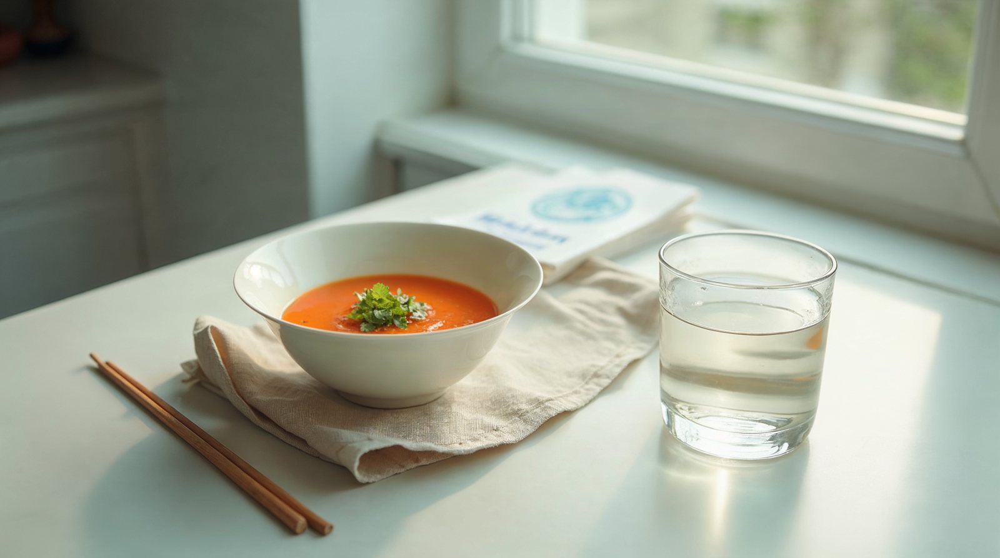
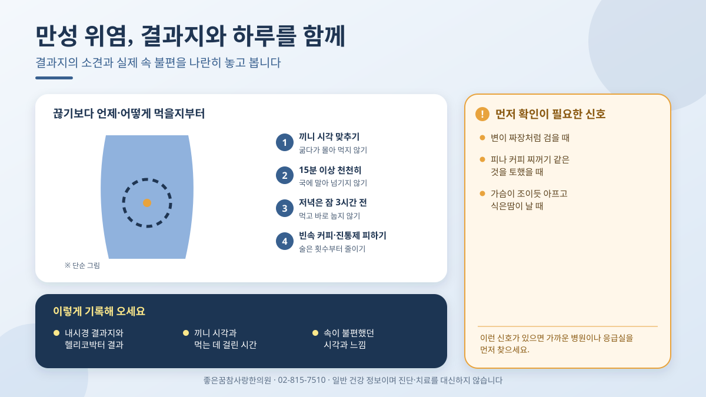

이종호 한의사 감수좋은꿈참사랑한의원 대표원장 (한의사 면허번호 19769)발행 2026-11-26 · 수정 2026-11-26
이 글의 차례
검진을 마치고 회복실에서 겨우 정신을 차렸는데, 결과 설명은 한마디로 끝납니다. "만성 위염 있으시네요. 크게 걱정할 건 아니고요." 고개를 끄덕이고 나왔지만, 집에 오는 길 내내 '만성'이라는 두 글자가 마음에 걸립니다. 평생 가는 병이라는 뜻일까, 오늘 저녁부터는 무엇을 먹어야 하나 싶습니다.
만성 위염은 위 안쪽 점막에 오랜 기간 염증의 흔적이 남아 있는 상태를 말합니다. 검진 위내시경을 받는 성인 가운데 아주 흔하게 나오는 소견이라, 그 말 자체로 당장 큰일이 났다는 뜻은 아닙니다. 다만 어떤 종류의 위염인지, 헬리코박터는 어땠는지, 다음 검진은 언제인지는 꼭 알아 두셔야 합니다.
그리고 한 가지 더. 내시경 사진과 내가 느끼는 속 불편은 서로 따로 놀 때가 많습니다. 사진은 깨끗한데 속이 늘 쓰린 분도 있고, 위염 소견이 꽤 있는데도 아무렇지 않은 분도 있습니다. 저는 진료실에서 이 두 가지를 나란히 놓고 봅니다.
진료실에서 이런 말씀을 자주 듣습니다. "위염이 있다니까 뭘 먹어도 겁이 나요." 커피를 끊고, 매운 것을 끊고, 밀가루를 끊다 보니 먹을 게 없어졌다는 분도 계십니다. 그렇게 애쓰셨는데도 속은 여전히 더부룩하다니, 얼마나 답답하셨을까 싶습니다.
왜 위에 염증 흔적이 오래 남을까요
위는 하루에도 몇 번씩 강한 산을 내며 음식을 삭입니다. 그 산에 위벽이 상하지 않도록 점막이 끈끈한 보호막을 두르고 있지요. 이 보호막과 산 사이의 균형이 오래 흔들리면 점막에 염증이 생기고, 그 흔적이 쌓인 것을 만성 위염이라고 부릅니다.
흔히 알려진 원인으로는 헬리코박터 파일로리균 감염이 있습니다. 어릴 때 들어와 오랫동안 조용히 머무르면서 점막에 염증을 남기는 경우가 많다고 알려져 있습니다. 그래서 검진 때 이 균 검사를 함께 권하는 일이 많습니다.
소염진통제나 아스피린을 오래 드시는 분, 술을 자주 드시는 분, 담배를 피우시는 분도 점막이 지치기 쉽습니다. 나이가 들면서 점막이 얇아지는 변화도 함께 옵니다. 하나의 원인보다 여러 가지가 겹쳐 오랜 시간에 걸쳐 만들어진 흔적이라고 보시면 됩니다.
한의학에서는 위를 음식을 받아들이고 삭이는 곳으로, 비(脾)를 그것을 온몸으로 실어 나르는 곳으로 함께 봅니다. 늦은 밤 급하게 먹는 식사, 끼니를 거르다 몰아 먹는 습관, 오래 이어진 걱정이 이 흐름을 흐트러뜨린다고 여겨 왔습니다. 그래서 저는 위만 보지 않고 하루의 리듬과 마음의 긴장을 함께 여쭙습니다.
결과지의 위염 이름, 이렇게 나눠 읽습니다
내시경 결과지에는 위염 앞에 여러 수식어가 붙습니다. 이름마다 뜻이 조금씩 다르니, 정확한 해석은 검사한 병원의 설명을 따르시되 대략의 감을 잡아 두시면 덜 불안합니다.
표재성 위염, 미란성 위염
표재성 위염은 점막 겉면에 가벼운 염증이 있다는 뜻으로, 검진에서 가장 흔하게 보는 말입니다. 미란성 위염은 점막이 살짝 헐어 있는 부분이 보인다는 뜻입니다. 진통제나 술, 급한 식사와 관련된 경우가 많아 생활을 함께 돌아보게 됩니다.
위축성 위염, 장상피화생
위축성 위염은 오랜 염증으로 점막이 얇아진 상태를 말합니다. 장상피화생은 위 점막 일부가 장 점막처럼 바뀐 것을 뜻합니다. 이 두 소견은 정기적으로 내시경을 이어 가며 지켜보라는 안내를 받는 경우가 많으니, 다음 검진 시기를 꼭 적어 두세요.
헬리코박터 양성
조직 검사나 호기 검사에서 균이 확인되었다면, 제균 치료를 할지 내과에서 상의하게 됩니다. 제균 치료 여부와 약 복용은 처방한 의사의 안내를 따르셔야 하고, 치료를 마친 뒤 균이 없어졌는지 다시 확인하는 검사도 놓치지 않으시길 권합니다.

위염 소견과 속 불편은 왜 따로 갈까요
저는 진료실에서 이 질문을 정말 자주 받습니다. "내시경에서는 별거 아니라는데 저는 왜 이렇게 쓰려요?" 반대로 "위축성 위염이라는데 저는 아무렇지도 않아요"라고 하시는 분도 계십니다.
위 사진은 점막의 모양을 보여 줍니다. 하지만 속이 불편한 느낌은 위가 얼마나 잘 늘어나고 줄어드는지, 음식을 얼마나 제때 아래로 내려보내는지, 위가 자극을 얼마나 예민하게 느끼는지에 더 많이 좌우됩니다. 그래서 점막이 깨끗해도 위가 예민하거나 움직임이 둔하면 불편할 수 있습니다.
이렇게 내시경에서 뚜렷한 원인이 없는데 더부룩함, 이른 포만감, 명치 통증이 이어지는 경우를 기능성 소화불량이라고 부릅니다. 만성 위염 소견이 함께 있는 분도 많습니다. 저는 이럴 때 이름을 하나로 정하기보다 불편이 언제, 무엇을 먹은 뒤, 어떤 날 심해지는지를 먼저 같이 찾습니다.

비슷해 보이지만 다르게 살펴야 하는 경우
명치가 쓰리고 신물이 목까지 올라오며 누우면 더 심해진다면 역류성 식도염 쪽을 먼저 생각합니다. 위염과 함께 있는 경우도 많지만 생활에서 조심할 점이 조금 다릅니다. 밤에 눕는 시각, 저녁 식사와 잠 사이의 간격을 특히 여쭙습니다.
빈속에 쓰리다가 먹으면 잠깐 가라앉고, 밤중에 쓰려서 깨는 일이 반복된다면 궤양이 있는지 확인이 필요할 수 있습니다. 이런 양상이 몇 주 이어진다면 내시경을 다시 받아 보시길 권합니다.
오른쪽 윗배가 기름진 식사 뒤에 묵직하게 아프고 등까지 뻗친다면 담낭 쪽 문제일 수 있어 초음파 확인이 필요합니다. 윗배 통증이 등으로 뚫고 나가듯 아프다면 췌장 쪽도 함께 생각해 봅니다.
예를 들면 이런 경우입니다
실제 어느 분의 사연이 아니라, 진료실에서 자주 보는 모습을 바탕으로 그려 본 장면입니다.
예를 들어 점심을 책상에서 십 분 만에 넘기고 오후 내내 커피로 버티는 직장인이라면, 위염 소견보다 먼저 그 십 분과 빈속의 커피를 봅니다. 메뉴를 바꾸기 전에 먹는 속도와 커피 시각부터 손보는 쪽이 오래갑니다.
허리나 무릎이 아파 소염진통제를 자주 드시는 어르신이라면, 속 쓰림이 약과 관련이 있는지부터 확인합니다. 진통제를 줄일 수 있을지는 처방한 의사와 상의하시도록 하고, 통증 쪽은 침이나 다른 방법으로 함께 살펴볼 수 있는지 이야기합니다.
시험이나 마감을 앞두고만 속이 탈 나는 분이라면, 위보다 긴장과 잠이 먼저 무너져 있는 경우가 많습니다. 이럴 때는 식단표보다 잠자리에 드는 시각을 먼저 맞춰 보자고 말씀드립니다.
약과 위, 같이 놓고 봅니다
속이 쓰려 오신 분께 드시는 약을 여쭈면, 진통제 이야기는 빠뜨리시는 경우가 많습니다. 두통이나 생리통, 관절 통증으로 가끔 드시는 약도 자주 반복되면 위 점막에는 부담이 될 수 있습니다. 감기약 속에도 진통 성분이 들어 있는 경우가 있습니다.
철분제나 일부 영양제도 빈속에 드시면 속이 불편할 수 있습니다. 그렇다고 약을 혼자 끊으시면 다른 문제가 생길 수 있으니, 약 봉투나 이름을 적어 와 주세요. 어떤 약을 언제 드시는지 함께 정리해 보는 것만으로도 실마리가 보이는 일이 적지 않습니다.
먼저 이렇게 여쭙니다
결과지를 함께 펼쳐 놓고, 저는 대략 이런 순서로 여쭙니다.
- 내시경은 언제 받으셨고, 위염 앞에 어떤 이름이 붙어 있었나요?
- 헬리코박터 검사를 하셨나요? 제균 치료를 받으셨다면 다시 확인하셨나요?
- 속이 불편한 때는 빈속인가요, 먹은 직후인가요, 한두 시간 뒤인가요?
- 진통제, 아스피린, 감기약, 철분제처럼 자주 드시는 약이 있나요?
- 저녁은 몇 시에 드시고, 몇 시에 눕나요? 술과 커피는 얼마나 드시나요?
- 체중이 빠지거나, 변 색이 검어지거나, 삼키기 어려운 느낌은 없나요?
처음부터 다 기억하지 못하셔도 괜찮습니다. 결과지 한 장과 요즘 드시는 약 봉투만 챙겨 오셔도 이야기의 반은 시작된 셈입니다.

일상에서 먼저 해 볼 수 있는 것
위염이 있다고 하면 먹을 것부터 잔뜩 끊는 분이 많습니다. 그런데 너무 많이 끊으면 끼니가 부실해지고, 오히려 공복이 길어져 속이 더 쓰리기도 합니다. 저는 끊는 것보다 '언제, 어떻게 먹느냐'를 먼저 바꿔 보시라고 권합니다.
- 끼니 시각을 대략 일정하게 맞추고, 오래 굶다가 몰아 먹지 않기
- 한 끼를 15분 이상 천천히 씹어 먹기, 국에 밥을 말아 후루룩 넘기지 않기
- 저녁은 잠들기 세 시간 전까지 마치고, 먹고 바로 눕지 않기
- 진통제를 자주 드신다면 빈속에 드시지 말고, 계속 필요하면 처방한 의사와 상의하기
- 술은 횟수부터 줄이고, 마시는 날은 빈속에 시작하지 않기
- 커피는 빈속을 피하고, 한 잔씩 줄여 보며 속의 반응을 적어 보기
맵고 짠 음식, 아주 뜨겁거나 찬 음식은 사람마다 반응이 다릅니다. 모든 분께 똑같이 금지하기보다, 일주일 동안 먹은 것과 속의 느낌을 나란히 적어 보면 내 위가 유독 힘들어하는 것이 보이기 시작합니다. 그것부터 줄이면 됩니다.
잠과 긴장도 위와 가깝습니다. 바쁜 주간이나 걱정이 많은 날에 유독 속이 쓰리다는 분이 많습니다. 저녁에 십 분이라도 천천히 걷거나 숨을 길게 내쉬는 시간을 만들어 보시길 권합니다.
한의원에서 함께 살필 수 있는 경우
- 내시경에서 큰 이상은 없다는데 더부룩함과 쓰림이 몇 달째 이어지는 경우
- 위염 약을 드셔도 식사 뒤 불편이 반복되고 입맛이 떨어진 경우
- 긴장하거나 잠을 설친 날마다 속이 함께 탈이 나는 경우
- 손발이 차고 찬 음식만 먹으면 속이 불편해지는 경우
좋은꿈참사랑한의원에 처음 오시면 먼저 아래 '먼저 확인이 필요한' 신호가 없는지부터 봅니다. 그다음 양손을 올려 달라고 말씀드리고 맥을 짚으며 식사, 잠, 대변, 체온을 여쭙고 배를 눌러 보며 불편한 자리를 확인합니다. 필요하면 초음파로 윗배를 살펴보기도 합니다.
그 뒤 진찰한 내용을 바탕으로 생활에서 바꿔 볼 것 하나와 함께 침, 온열 장비를 이용한 관리, 한약 상담 가운데 지금 상태에 맞는 것을 정합니다. 한약을 상의할 때는 드시는 위장약과 다른 약을 모두 확인하고 신중하게 정합니다. 위염 약이나 제균 치료는 처방한 의사와 상의 없이 멈추지 않습니다.
다시 오시면 지난번 정한 것 하나가 실제로 어땠는지부터 이어서 듣습니다. 저녁 시각을 당기기로 했다면 몇 번이나 지켰는지, 그날 밤 속은 어땠는지를 여쭙니다. 그렇게 한 걸음씩 맞춰 가는 것이 제가 생각하는 소화 상담입니다.
이렇게 기록해 오시면 상담이 쉬워집니다
위의 불편은 진료실에 앉아 있는 그 순간보다, 집에서 밥을 먹은 뒤에 더 잘 드러납니다. 2주만 짧게 적어 보세요.
- 최근 내시경 결과지와 헬리코박터 검사 결과
- 끼니 시각과 대략의 메뉴, 먹는 데 걸린 시간
- 속이 불편했던 시각과 느낌(쓰림, 더부룩함, 신물, 명치 통증)
- 드신 약과 진통제, 술, 커피
- 잠든 시각과 깬 시각, 그날의 긴장 정도
빠진 날이 있어도 괜찮습니다. 적어 오신 줄 가운데 눈에 띄는 날부터 함께 들여다보겠습니다.
오래 함께 가는 위를 위해
'만성'이라는 말은 무겁게 들리지만, 오랜 시간에 걸쳐 쌓인 흔적이라는 뜻에 더 가깝습니다. 하루아침에 생긴 것이 아니니, 하루아침에 모든 것을 바꾸려 애쓰지 않으셔도 됩니다.
그만큼 생활의 작은 습관 하나가 위에게는 큰 쉼이 될 수 있습니다. 저녁 시각 하나, 먹는 속도 하나, 빈속의 커피 한 잔. 이 가운데 하나만 골라 이번 주를 지내 보세요. 다음에 오시면 지난 일주일 동안 저녁을 몇 시에 드셨는지부터 여쭙겠습니다.
이런 증상은 먼저 확인이 필요합니다
- 변이 짜장처럼 검거나, 피나 커피 찌꺼기 같은 것을 토한 경우
- 가슴이 조이듯 아프고 식은땀이 나거나, 체중이 빠지고 음식이 잘 넘어가지 않는 경우
이런 신호가 있으면 한의원보다 가까운 병원이나 응급실을 먼저 찾으세요.
함께 읽으면 좋은 글
- 위염으로 약을 오래 먹고 있을 때 생활에서 무엇을 살피나요?
- 속쓰림과 신물이 오래 갈 때 어떤 점을 살펴보고, 언제 검사를 받아야 하나요?
- 식사 뒤에 속이 더부룩한 것은 무엇 때문이고, 속쓰림과는 어떻게 다른가요?
- 조금만 먹어도 금방 배가 부를 때는 무엇을 살펴보나요?
- 매운 음식을 먹고 나서 속이 쓰릴 때는 어떻게 살피나요?

여쭙는 것
- 내시경은 언제 받으셨고, 위염 앞에 어떤 이름이 붙어 있었나요?
- 헬리코박터 검사를 하셨나요? 제균 치료를 받으셨다면 다시 확인하셨나요?
- 속이 불편한 때는 빈속인가요, 먹은 직후인가요, 한두 시간 뒤인가요?
생활에서 해 볼 것
- 끼니 시각을 대략 일정하게 맞추고, 오래 굶다가 몰아 먹지 않기
- 한 끼를 15분 이상 천천히 씹어 먹기, 국에 밥을 말아 후루룩 넘기지 않기
- 저녁은 잠들기 세 시간 전까지 마치고, 먹고 바로 눕지 않기
한의원에서 함께 살필 것
- 내시경에서 큰 이상은 없다는데 더부룩함과 쓰림이 몇 달째 이어지는 경우
- 위염 약을 드셔도 식사 뒤 불편이 반복되고 입맛이 떨어진 경우
- 긴장하거나 잠을 설친 날마다 속이 함께 탈이 나는 경우
먼저 확인이 필요한 신호
- 변이 짜장처럼 검거나, 피나 커피 찌꺼기 같은 것을 토한 경우
- 가슴이 조이듯 아프고 식은땀이 나거나, 체중이 빠지고 음식이 잘 넘어가지 않는 경우
한눈에 보는 표
| 구분 | 핵심 |
|---|---|
| 여쭙는 것 | 내시경은 언제 받으셨고, 위염 앞에 어떤 이름이 붙어 있었나요? 헬리코박터 검사를 하셨나요? 제균 치료를 받으셨다면 다시 확인하셨나요? |
| 생활에서 해 볼 것 | 끼니 시각을 대략 일정하게 맞추고, 오래 굶다가 몰아 먹지 않기 한 끼를 15분 이상 천천히 씹어 먹기, 국에 밥을 말아 후루룩 넘기지 않기 |
| 한의원에서 함께 살필 것 | 내시경에서 큰 이상은 없다는데 더부룩함과 쓰림이 몇 달째 이어지는 경우 위염 약을 드셔도 식사 뒤 불편이 반복되고 입맛이 떨어진 경우 |
| 먼저 확인이 필요한 신호 | 변이 짜장처럼 검거나, 피나 커피 찌꺼기 같은 것을 토한 경우 가슴이 조이듯 아프고 식은땀이 나거나, 체중이 빠지고 음식이 잘 넘어가지 않는 경우 |
자주 묻는 질문
만성 위염은 평생 가는 병인가요?
만성 위염은 오랜 기간 쌓인 염증 흔적을 뜻하는 말이고, 그 말만으로 앞으로의 경과가 정해지지는 않습니다. 종류에 따라 정기 내시경이 필요한 경우가 있으니 검사한 병원에서 안내받은 주기를 따르세요.
위염이 있으면 커피와 매운 음식은 모두 끊어야 하나요?
사람마다 반응이 달라서 일괄적으로 끊기보다 먹은 것과 속의 느낌을 함께 적어 보시길 권합니다. 유독 불편이 따라오는 음식부터 줄이고, 빈속에 마시는 커피는 피하는 쪽이 부담이 적습니다.
위염 약을 먹고 있는데 한의원 진료를 같이 받아도 되나요?
드시는 약을 모두 알려 주시면 그에 맞춰 진료 방향을 정합니다. 위염 약과 제균 치료는 처방한 의사와 상의 없이 멈추지 않습니다.
한의원에서 위 내시경 같은 검사를 하나요?
위 점막을 직접 보는 검사는 내과에서 받으셔야 합니다. 한의원에서는 진맥과 복진, 필요하면 초음파로 윗배를 살피고, 가져오신 결과지를 함께 봅니다.
위염에 좋은 음식이 따로 있나요?
모든 분께 맞는 한 가지 음식보다, 내 위가 편하게 받아들이는 음식을 찾는 것이 먼저입니다. 먹은 것과 속의 느낌을 일주일쯤 적어 보시면 편한 음식과 부담스러운 음식이 보이기 시작하고, 그 기록을 바탕으로 함께 정리해 드립니다.
좋은꿈참사랑한의원은 재진 때 지난번 이야기부터 이어서 여쭙니다. 진료시간과 예약은 오시는 길에서 확인하세요.
어디서 상담받을 수 있나요?
좋은꿈참사랑한의원은 서울 동작구 만양로2길 2 신성빌딩 3층·5층(서울 동작구 상도동, 7호선 상도역 3번 출구 근처)에 있습니다. 한의사 3명(이종호 대표원장, 조영기 수석진료원장, 정원영 진료원장)이 진료합니다. 진료시간은 평일 09:30~20:00(점심 13:00~14:00), 토·일·공휴일 09:30~15:00이며, 방문 전 전화로 확인을 권합니다. 예약은 네이버 예약, 카카오톡 상담, 전화 02-815-7510로 받습니다.
이 글은 일반적인 건강 정보이며 개인의 진단이나 치료를 대신하지 않습니다. 증상이 있거나 복용 중인 약이 있다면 진료를 통해 확인하세요. 치료 효과는 개인마다 다를 수 있습니다.
작성 기준: 일반적으로 알려져 있는 건강 정보를 참고해 정리했습니다(대표원장 감수). 증상 기록은 1~2주 동안 하루 1회, 비슷한 시간에 적어 오시면 지난 상태와 비교하기 쉽습니다.